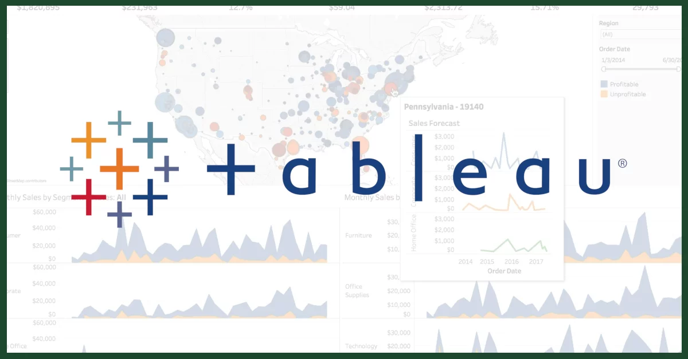
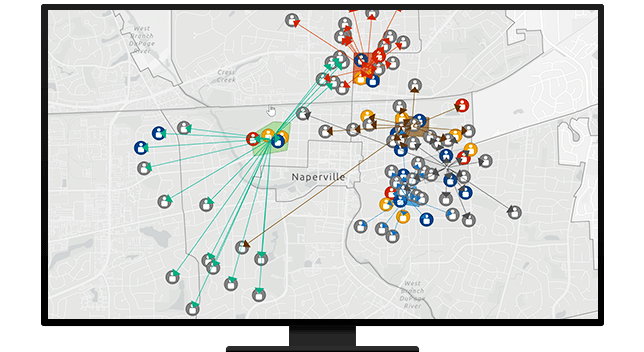

Built end-to-end data pipeline for FBI UCR dataset, ensuring data integrity and reliability.
Developed and optimized predictive models, with Ridge Regression proving most effective.
Connected GCP BigQuery to Tableau for real-time data updates and modifications.
Designed dynamic Tableau dashboards with geospatial visuals, enabling data-driven decisions.
Built a Django-based ticket booking system for comedy shows, allowing users to select dates, locations, and read reviews.
Designed EER and relational models to understand business problems and customer needs.
Managed venue features, seating arrangements, and reservations using SQL and MongoDB for functional analysis.
Analyzed dataset with SQL for deep insights and processing.
Enhanced dataset reliability through thorough cleaning with Power Query.
Used DAX and time intelligence for Year-over-Year growth analysis.
Generated key KPIs for road safety performance evaluation.
Presented findings with impactful charts, maps, and concise insights.
Analyzed CIC Darknet2020 dataset to distinguish malicious and benign traffic.
Developed ensemble statistical learning model with SVM, KNN, and Random Forest, achieving 92.6% accuracy.
Surpassed existing state-of-the-art model approaches with advanced feature engineering and tuning.

Analyzed crime data to identify annual, monthly, and weekly trends, highlighting the most common crime types.
Compared crime rates across regions, exploring correlations with economic factors and significant events.
Employed statistical methods and time series forecasting to identify patterns, outliers, and predict future crime trends.
Developed an MCQ Generator that produces 5 multiple-choice questions (MCQs) with 4 answer options for each, using input text to ensure contextually accurate questions.
Utilized the LangChain framework for orchestrating interactions with large language models (LLMs) and managing prompt generation, ensuring seamless question creation.
Integrated the OpenAI API to leverage advanced GPT models for natural language understanding, generating high-quality questions and answer options.
© Jahnavi Mishra Thank You for Visiting